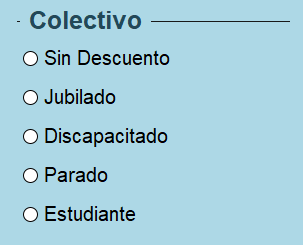

En la sección de Colectivo, encontrará cinco alternativas diseñadas para distintos contextos:

Esta elección representa la tarifa básica para todos los usuarios que no cumplen con los requisitos para descuentos especiales.
Brindamos tarifas reducidas a personas jubiladas y de la tercera edad. Solo necesita mostrar su identificación de jubilado al subir a bordo.
Promovemos la inclusión y la accesibilidad, pueden aprovechar tarifas reducidas en nuestro servicio de autobús.
Reconocemos que las dificultades pueden afectar a cualquier persona, ayudamos a aquellas personas sin empleo al transporte más económico.
Los estudiantes son el futuro, con ello debemos promover un transporte sostenible, y más accesible a los jóvenes.
¡RECUERDE! No olvide llevar su documentación en el autobús, puede que un inspector le pida su justificante de descuento.
Para elegir una de estas alternativas, puede usar su ratón, seleccionando el círculo blanco al lado de su descuento. Luego, no olvide confirmar su elección para recibir el billete.